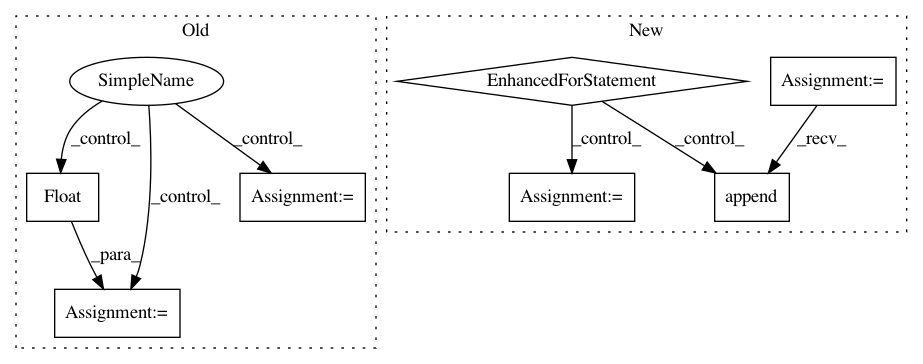

2999e509688a82f8be65600727a5922b5739822b,conceptnet5/vectors/evaluation/wordsim.py,,compute_semeval_score,#Any#Any#,309
Before Change
if any(np.isnan(x) or x <=0 for x in [spearman_score["low"], pearson_score["low"]]):
acc_harmonic_mean = float("NaN")
low_harmonic_mean = float("NaN")
high_harmonic_mean = float("NaN")
else:
acc_harmonic_mean = hmean([spearman_score["acc"], pearson_score["acc"]])
low_harmonic_mean = hmean([spearman_score["low"], pearson_score["low"]])
high_harmonic_mean = hmean([spearman_score["high"], pearson_score["high"]])
return pd.Series(
[acc_harmonic_mean, low_harmonic_mean, high_harmonic_mean],
After Change
and a Spearman correlation coefficient.
intervals = ["acc", "low", "high"]
scores = []
for interval in intervals:
if any(np.isnan(x) for x in [spearman_score[interval], pearson_score[interval]]):
scores.append(float("NaN"))
elif any(x <= 0 for x in [spearman_score[interval], pearson_score[interval]]):
scores.append(0)
else:
scores.append(hmean([spearman_score[interval], pearson_score[interval]]))
return pd.Series(
scores,
index=intervals
)
In pattern: SUPERPATTERN
Frequency: 3
Non-data size: 7
Instances
Project Name: commonsense/conceptnet5
Commit Name: 2999e509688a82f8be65600727a5922b5739822b
Time: 2017-03-08
Author: joanna.teresa.duda@gmail.com
File Name: conceptnet5/vectors/evaluation/wordsim.py
Class Name:
Method Name: compute_semeval_score
Project Name: Scitator/catalyst
Commit Name: c6ea0fc2354e54e3ae76fee78702c8ee228ecad7
Time: 2019-10-29
Author: 34604336+jchen42703@users.noreply.github.com
File Name: catalyst/dl/callbacks/metrics/auc.py
Class Name: AUCCallback
Method Name: on_loader_end
Project Name: tyarkoni/pliers
Commit Name: 1e792729ce59d1cd71bb776d74bb3e427b580a4e
Time: 2018-04-13
Author: quinten.mcnamara@gmail.com
File Name: pliers/extractors/api/clarifai.py
Class Name: ClarifaiAPIVideoExtractor
Method Name: _to_df